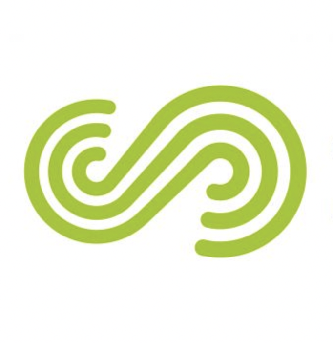
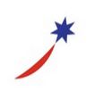
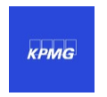
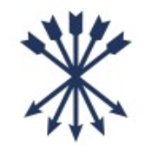
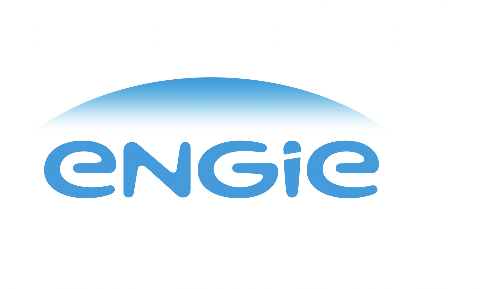
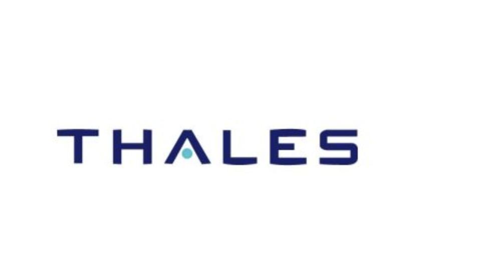

Experience
|  |
SUEZ Digital Solutions |
Member of the Data & GenAI team
Our goal is to provide cloud‑infrastructure services to data scientists and to rethink the machine‑learning platform.
Accomplishments
- Set up a cloud project using infrastructure‑as‑code, CI/CD pipelines, and created the accompanying technical and support documentation.
- Proposed and carried out a comprehensive assessment of the machine‑learning platform:
- Collected key performance indicators (KPIs) through scripts running in Azure and Azure DevOps.
- Built a Power BI report to showcase the various aspects of the assessment—costs, security, design, lifecycle, etc.
- Participated in the team’s Agile organization within Azure DevOps:
- Created a backlog based on the needs identified in the assessment.
- Defined the structure and work items.
- Established a roadmap according to the priority of those needs.
- Developed a proof‑of‑concept (POC) around AKS as compute instances for Azure Machine Learning.
SUEZ |
Cloud Engineer (frelance)
Member of SecOps team with a mission to develop and report on the SUEZ GIS security perimeter. Prisma Cloud was a key solution, and my main activity was automated KPI gathering (API) and reporting via Power BI dashboards.
- Prisma Cloud reports with API, Azure DevOps pipelines and Power BI dashboards
- Azure Policies management (FinOps, Governance, Security, Compliance, Tags)
Environment: Azure, Azure DevOps, Power BI.
Technologies: Terraform, PowerShell.
Projects:
- Source‑code secrets and vulnerability management with Azure DevOps task extensions, Checkov and Gitleaks (POC)
- Automated expiration notifications for Azure Key Vault objects (certificates, secrets) with Azure Logic Apps
 |
AXA Group Operations |
Cloud DevOps Engineer (freelance)
Joined AXA Transversal Cloud Brokers team. Our goal was to support Cloud Brokers worldwide and provide streamlined cloud‑migration solutions for AXA entities.
- Three‑tier solution to facilitate cloud‑migration assessments and Terraform code generation (React JS, Golang, PostgreSQL).
- ITSM automation for Azure identity management (Python API).
- Cloud‑brokers support for Azure.
Environment: Azure, Azure DevOps, GitHub Enterprise, Terraform Enterprise.
Technologies: React JS, Python, Golang, PostgreSQL, Terraform.
|  |
Sodexo |
Lead DevOps (external)
Joined Sodexo Cloud Competences Center (MoveToCloud initiative) to accelerate Azure adoption. Delivered infrastructure automation and built reusable “Products” that encoded Sodexo’s golden‑rules.
Key achievements:
- Originated the “Products” concept.
- Implemented multi‑repository/project code branching.
- Managed Sodexo Azure DevOps private marketplaces.
- Developed custom Azure DevOps service connections.
- Designed Azure DevOps licence‑management service.
- Created reporting scripts (licence usage, automation schedules, product dashboard).
- Authored extensive product documentation and best‑practice guides.
- Provided global Azure DevOps support.
- Contributed to cloud‑native initiatives (certification renewals, SharePoint/Dynamics rights replication).
Environment: Azure, Azure DevOps, GitHub Enterprise, Terraform Enterprise.
Technologies: React JS, Python, Golang, PostgreSQL, Terraform.
|  |
KPMG |
Cloud DevOps Engineer (external)
Worked on the “Constellation” SaaS project – a cloud‑based platform exposing internal metrics and automating accountant workflows. Hosted in Azure, the solution was built with PowerShell and ARM templates.
- Provisioned full environments via ARM templates.
- Automated pipelines with Azure DevOps.
- Managed configuration through Azure DevOps Library.
- Integrated PowerShell scripts with Azure DevOps API (experimental).
- Provided documentation (Wiki) and acted as Azure DevOps technical lead.
- Implemented GitFlow branching strategy.
- Supported SQL queries and Azure Data Factory automation.
Environments: Azure, Azure DevOps.
Technologies: PowerShell, ARM templates.
|  |
Rothschild |
DevOps Engineer (external)
Member of the DevOps and Database team.
- CI/CD implementations for internal projects.
- Management of a global orchestration platform.
- Documentation and support.
Environments: Windows Server 2012, SQL Server 2012.
Technologies: VSTS/TFS, VisualCron, PDQ Deploy & Inventory, PowerShell.
|  |
Engie |
DevOps Engineer (external)
Member of the Desktop Engineering team (Paris & Brussels).
- Packaging with Windows Installer XML (primary tool).
- Automation of application integration in MSI format.
- Application delivery via PDQ Deploy and SCCM.
- CI/CD implementation for one project.
- Documentation and support.
Environments: Windows Server 2012, Windows 7.
Technologies: WiX, Visual Studio, InstEd, PDQ Deploy & Inventory, SCCM 2012, PowerShell.
|  |
Thales |
DevOps Engineer (external)
Project: migration of desktop applications to Windows 7. Member of the Desktop Engineering team.
- Verification of functional and technical specifications.
- Re‑work of application integration in MSI format.
- Documentation and support.
Environments: Windows Server 2012, Windows 7.
Technologies: InstEd, InstallShield, VBScript, PowerShell, ITCM.
NEWBX
CEO
Proposed innovative application‑integration services. NEWBX supports clients in automating integration with WiX:
- Open‑source.
- Interoperable – built‑in integration with developers’ workflow (Visual Studio).
- Free pricing.
- Support from FireGiant, the WiX creators, including co‑founder Rob Mensching (MVP).